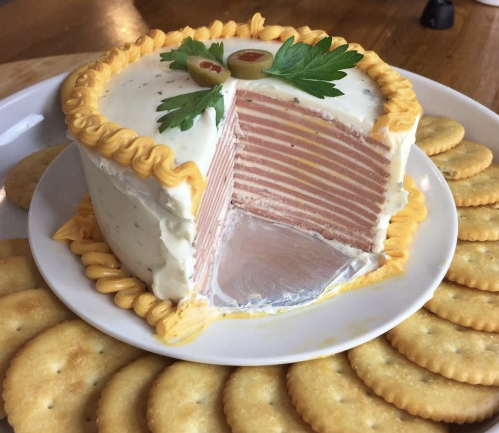

|
Ingredients:
- 1 pound of sliced bologna
- 2 tablespoons grated onion
- 1 8-oz package cream cheese, softened
- 1 tablespoon worchestershire sauce
- 1 package of crackers
Directions:
- Mix softened cream cheese, onion and Worcestershire sauce together in a bowl. Beat until fluffy.
- Place a slice of bologna on a plate and spread the cheese mix on its surface.
- Continue adding alternating layers of bologna and cheese mix until all of the bologna is used.
- Spread the remaining cheese mix smoothly around the sides and top of the cake.
- Cool in refrigerator. To serve, cut into very thin slices like a traditional cake and place the slices on crackers.
|

|